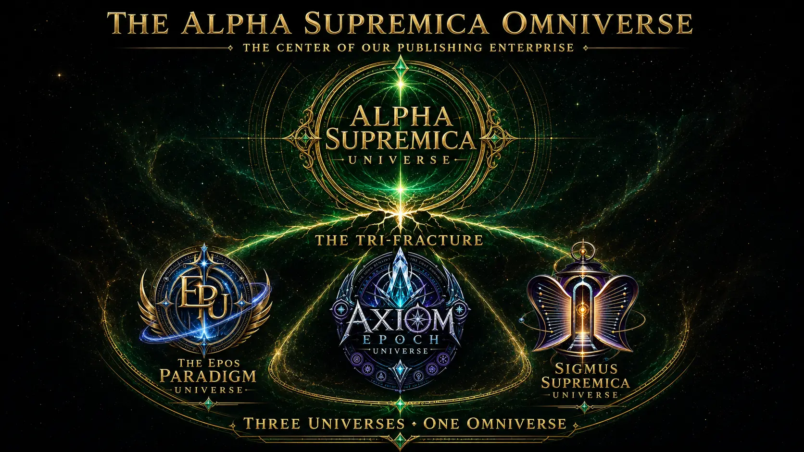

Bring in a story
Enter the active EPU Studio with a chapter, scene, outline, timeline, or lore document.
THE ALPHA SUPREMICA OMNIVERSE
Enter through the living map. Each gateway reveals a distinct creative domain without dissolving its creator, purpose, or authority into the others.

Concept artwork generated with OpenAI / ChatGPT under the creative direction of Sean Alan LaViscount. Demonstration use only; not offered for sale.
Enter the active EPU Studio with a chapter, scene, outline, timeline, or lore document.
See what she can recognize, protect, question, and prepare—without granting herself authority.
Learn why Paradigm holds truth and evidence while Paradox holds fiction and lore.
For co-founders who want to inspect what works, what is protected, and what remains. Loading reviewed progress…
Checking human publication record…The map opens domains; it does not transfer ownership, establish consent, or grant canon authority. MOMMA remains advisory.
GUIDED FOUNDER EXPERIENCE
This public-safe walkthrough uses examples only. It does not change Paradigm evidence, Paradox canon, creator authority, or corporate records.
FIVE-MINUTE TOUR
This tour explains what the EPU is, what MOMMA does, what remains human-controlled, and why the system protects each creator while allowing shared development.
Sigmus creator and Alpha developer/curator. His spaces require his participation.
Axiom Epoch creator/controller. His space requires his participation.
Operational and framework roles remain limited to documented scope.
STORY STUDIO
Follow one simple path. MOMMA organizes what she notices; you remain the storyteller and decision-maker.
Choose the creative lane, then add a chapter, scene, outline, timeline, or lore document.
Your document stays in this browser unless you deliberately export it.
Browse names, events, relationships, possible conflicts, and open questions. These are suggestions for your attention—not declarations about your world.
Use this only when moving analysis between this studio and another MOMMA-compatible model.
Every suggestion gets one understandable choice. This organizes your working view; it does not silently rewrite canon.
This optional step helps when one character or place appears under several names—for example “Frederick,” “Senator Delaney,” and “Frederick Delaney.”
They only select the name variations you want to group. They do not approve, reject, or make anything canon.
This is the useful result: the people and things you chose, the emerging chronology, and everything intentionally protected or left unresolved.
Download a portable working file containing MOMMA’s notes and your choices. It can be inspected later or carried into the private governed platform without pretending the review is official canon.
Add a story first.
The file includes a source fingerprint, advisory proposals, human choices, identity groups, and declared limits. It is an unsigned working artifact—not proof of truth, ownership, authority, or canon.
PACKAGE INSPECTOR
Choose an exported review file. The inspector recalculates its checksum and checks its required structure. If you also select the original source, it checks whether that source matches the fingerprint recorded during review.
The package is internally intact and, when supplied, matches the source used to create it. It does not prove that every statement is true or that the person who made the decisions had authority; signed sovereign receipts provide that later layer.
This checks demonstration-package structure. Signed sovereign receipts require the private verifier and its trust configuration.